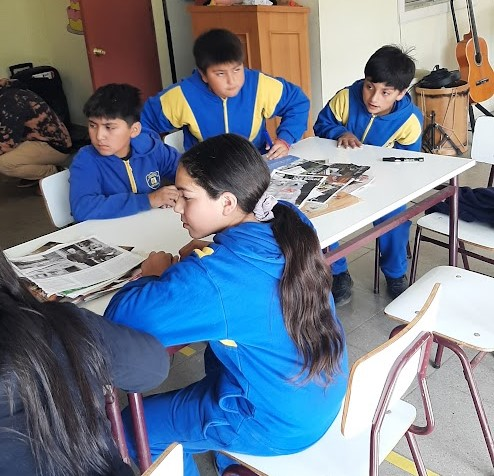

Semana de la Cultura y el Arte
La SEREMI de las Culturas, las Artes y el Patrimonio, celebró con éxito la Semana de la Cultura y el Arte en la Escuela Cucha Urrejola, con la participación activa de estudiantes de nuestra escuela, San Francisco de Asís, Membrillar y la institución anfitriona.
La jornada fusionó creatividad y aprendizaje, donde nuestros estudiantes plasmaron artísticamente su entorno acompañando sus obras con frases inspiradas en Gabriela Mistral, vinculando arte y naturaleza. Como parte de las actividades, posteriormente, elaboraron bombas de barro con semillas, una iniciativa que une expresión artística con conciencia ecológica.
Además, exploraron el movimiento inspirador de Salvador Dalí, creando obras surrealistas que desafiaron la imaginación. Igualmente, hicieron trabajos con collages integrando diversos materiales, fomentando así la colaboración y reinterpretación artística.
Esta experiencia enriquecedora no solo desarrolló habilidades creativas en nuestros estudiantes, sino que también reforzó valores como el trabajo en equipo, el respeto al medio ambiente y la valoración del patrimonio cultural. La SEREMI de la Cultura destacó el entusiasmo de los participantes, consolidando el arte como herramienta transformadora en la educación.
¡Una celebración que, sin dudas, dejó huella en nuestros estudiantes!
